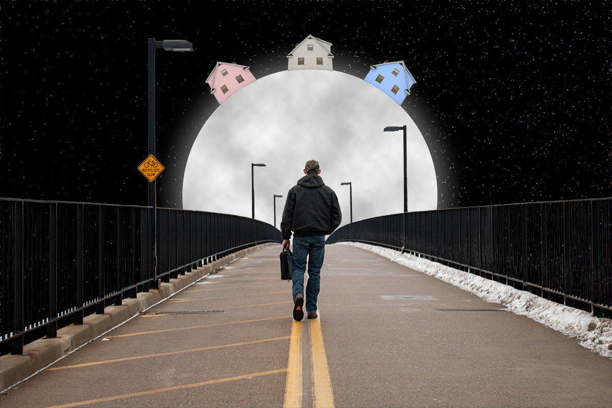
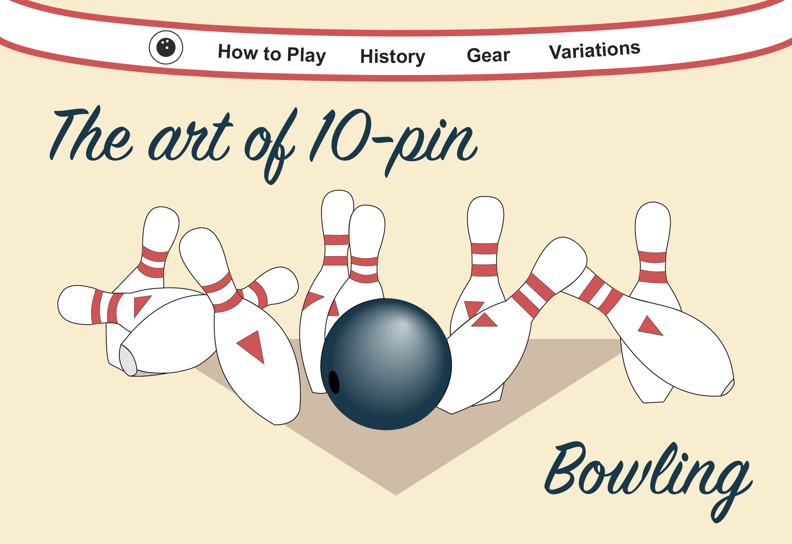

A collection of my graphic work created using various Adobe programs.

"Man on the Moon" Photoshop project for a photography class"Tour de Italia" Photoshop project for a visual rhetoric class

Bowling website design made for a web design classLogo for my multimedia column in the UWEC student newspaper, The Spectator